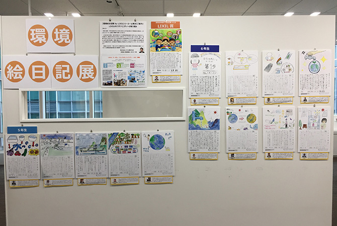
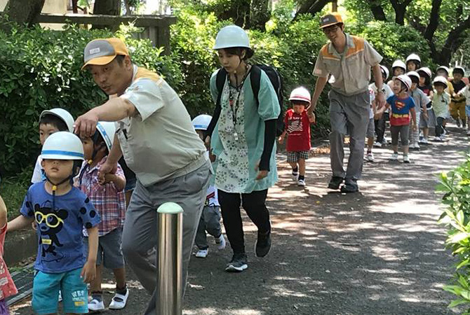
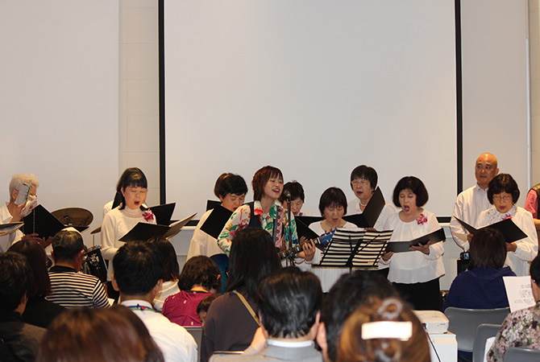
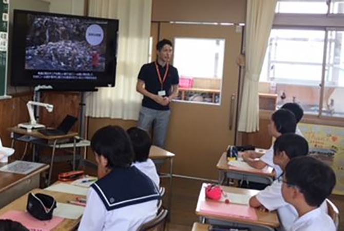

地域との協働
LIXILの各拠点では、自治体や教育機関、NPOなど様々なステークホルダーと協働しながら、それぞれの地域のニーズに即した社会貢献活動に取り組んでいます。地域の皆さまからの期待に応える活動を行い、喜びの声をいただくことは、従業員一人ひとりの喜びにもなっています。
ここでは、四国から全国へ広がる観光地トイレ清掃や、香川支店で開催された復興支援イベントなどの活動を紹介します。
おもてなし清掃 —四国から全国へ
「観光地を訪れる方々への“おもてなし”として清潔なトイレでお迎えしたい。」そんな思いを込めて、2014年に四国エリアでスタートした「LIXIL観光地トイレ おもてなし清掃」の活動は、現在、全国に広がっています。
2019年は活動を全国に展開し、30都道府県60エリアにある320箇所のトイレを2,378人の従業員が清掃しました。
※2020年の活動は、新型コロナウイルス感染症により見送りとしております。
この取り組みは、ユニバーサル社会の実現に向け、清掃活動を通じて“おもてなし”の心を育む内容として、東京2020公認プログラム（街づくり）に認証されています。
観光地トイレ おもてなし清掃 >

トイレ清掃活動の様子
新市庁舎の壁面タイルづくり ―INAXライブミュージアム（愛知県常滑市）
INAX創業の地であり、やきものの街として知られる愛知県常滑市には、ものづくりをテーマにさまざまな体験ができる「INAXライブミュージアム」があります。2006年のグランドオープン以来、陶器やタイルなどやきものに関する展覧会や、タイルやどろだんご作りなどの体験教室、どろあそびイベントなどを通じて、地域の皆さまに親しまれてきました。
2020～2021年にかけて常滑市役所と協働して、常滑市新庁舎入口に通じる歩行者デッキの壁面を飾るタイルを、市民の皆さまが制作するお手伝いをしました。INAXライブミュージアムでは、常滑の専用工場で作られた帝国ホテル旧本館のスクラッチタイル（当時の呼称はすだれ煉瓦）の素材や道具を準備するとともに、ミュージアム内の「土・どろんこ館」で市民制作ワークショップを開催しました。市民約1,600人が参加したワークショップでは、参加者は猫ややきもの、飛行機、家紋などさまざまなデザインを考え、釘などを使ってタイルにスクラッチして描かれ、幅広い世代に楽しんでいただくことができました。制作したタイルは、2022年初めに完成予定です。
ミュージアムでは、これまでも常滑市市民病院のモザイク壁画づくりワークショップのお手伝いをしたほか、地域の万引き防止キャンペーン用に陶器マスコットを制作するなど、地域づくりに貢献できるよう取り組んでいます。
市民制作ワークショップでのスクラッチタイルづくりの様子
INAXライブミュージアム >
大阪・関西万博教育プログラム「アイデアミーティング」に参加 ―関西野丁場営業グループ
2025年の大阪・関西万博に向けて、公益社団法人2025年日本国際博覧会協会が、大阪府内の小中学生を対象に、万博やSDGsへの理解を深める教育プログラムを実施しています。LIXILは、子どもたちが企業のSDGsへの取り組みを学び、子どもたちのアイデアについて意見交換を行う「アイデアミーティング」に、講師として参加しました。
2020年11月から12月にかけて、堺市立大泉学園と摂津市立第三中学校で開催したアイデアミーティングでは、開発途上国向け簡易式トイレシステム「SATO」など、LIXILのSDGsへの取り組みを紹介しました。子どもたちからは、「SATOは世界でどれぐらい使われているんですか？」など積極的に質問があり、熱心に耳を傾けてくれました。また、SDGs達成に向けた子どもたちのアイデアとして、差別や偏見をなくすための応援ストラップや、きれいで安全な地域づくりのための清掃活動やハザードマップ作りなど、さまざまなアイデアが寄せられ、意見交換を行いました。講師を務めた従業員は、「SDGsの目標を達成するために、子どもたちが『自分たちができることは何か』を真剣に考えている様子に、感銘を受けました」と話しています。
（左）：オンラインでの意見交換
（右）：「アイデアミーティング」にオンラインで登壇するLIXIL従業員
出前授業「アルミサッシができるまで」 ―株式会社北陸LIXIL製作所（小矢部工場）
小矢部工場では、地域貢献活動の一環として、毎年小学校5年生の社会科の工場見学を実施しています。2020年はコロナ禍により工場見学が難しい状況であったため、地域の小学校で「アルミサッシができるまで」という小矢部工場オリジナルの出前授業を3校で開催しました。
LIXILや工場の事業概要や、アルミ地金などの原材料を輸入してアルミサッシを作る工程を説明し、子どもたちにはアルミ形材に色を付ける実験を見てもらったり、部品ナビ装置を使ってアルミのコースターとキーホルダーをランプが点滅するBOXから取る体験をしてもらったりしました。授業を行った蟹谷（かんだ）小学校では、子どもたちはメモ用紙が足りなくなるほど熱心に聞いてくれ、アルミ形材の着色実験では驚きの歓声が上がりました。「形材の色はどうやって変えているのですか？」「「ボーキサイトが採れるのは、どんな場所ですか？」「仕事をするときに大切にしていることは何ですか？」など、子どもたちからはたくさんの質問が寄せられました。
講師を務めた従業員は、「例年の工場見学と違い、実験装置の持ち込みなど準備が大変でしたが、子どもたちは興味深く真剣に聞いてくれました。コロナ禍で、地域の皆さまも子どもたちも大変な状況が続いていますが、こうした環境の変化に柔軟に対応し、地域に寄り添った活動を継続していきたいと思います」と語っています。
また小矢部工場では、コロナ禍で地域の学校や子どもたちが困っていることはないか、長年連携をしてきた小学校に連絡を取り、フェイスシールドやパーティション、消毒液、紙ウエスなどを計4校に寄贈しました。学校からは、「学校や子供たちのことを心配して電話をもらえたのが、何よりうれしかった」と言っていただき、地域の皆さまとの関係が深まりました。
今後も、地域に寄り添った取り組みを進めていきます。
蟹谷小学校での授業の様子
「環境絵日記」に協賛—横浜支店
LIXILでは、横浜市資源リサイクル事業共同組合主催の「環境絵日記」に協賛しています。環境絵日記は、子どもたちが家族や身近な人と環境問題や環境保全について話し、絵と文章の組み合わせで表現する絵日記のコンテストです。毎年、夏休みに横浜市内の子どもたちから募集し、たくさんの独創的な作品が集まります。
19回目となる2018年のテーマは、「みんなでつくる環境未来都市・横浜」。2万3000もの作品の中から約600作品が大賞や優秀特別賞、入賞作品として選ばれました。12月に行われた表彰式で「LIXIL賞」を受賞したのは、「平和へのかけ橋〜横浜から世界の友達へ」と題した小学6年生の作品です。LIXILは副賞として受賞者の作品の焼付タイルを贈呈しました。
また、2019年の2月から4月、LIXILショールーム横浜で絵日記の展示会を開催しました。展示した51点の絵日記は、「水」や「トイレ」に関わる約1,100点から選び、期間中、作者ご本人やご家族を招待して一緒に写真撮影を行いました。作品には一点一点、「みんなを笑顔にするアイデアですね！」「これからも一緒にきれいな街を守っていきましょう！」など、横浜支店の従業員が顔写真入りの手作りメッセージプレートを添えました。
保育園の防災訓練に参加—半田工場
浴室で使われる水栓金具などを主に製造している愛知県の半田工場は、地域に開かれたオープンな工場をめざして、インターンシップの受け入れや障がい者雇用、出前授業、「コミュニティ・ダイアログ」の実施など、さまざまな活動を続けています。
2018年5月には、近隣保育園の防災訓練に参加し、園児153名の津波を想定した高台への避難誘導をサポートしました。やっと歩けるようになったばかりの子も含めたくさんの子どもたちを連れて迅速に高台に移動するのは大変です。園長先生からは「とても心強い」とのお言葉をいただき、参加した従業員の防災意識も高まりました。
「災害時に子どもたちを連れて避難できるか不安」という保育士さんたちの声に応えようと始まった防災訓練は、今回で7回目となります。年2回実施される訓練は、市役所や地元自治会、近隣住民の皆さんと密に連携しながら続けており、いざというとき、地域の安全・安心を守ることができるよう、これからも続けていきます。
復興支援イベントを開催—香川支店
2018年4月、LIXILショールーム高松で復興支援イベント「チャリティコンサート＆トークショー」が開催されました。東日本大震災の翌年から毎年続くこのイベントは、今回で7回目を迎えます。ステージには、ご当地ソングを数多く手がけるシンガーソングライターのmimikaさんや地域のブルースバンド、童謡唱歌同好会などが登壇し、会場は大いに盛り上がりました。また、東京2020パラリンピック出場をめざす地元香川のパラアスリート、田中司さんのトークセッションのほか、地域で人気のカフェや焼き菓子店の出展ブースも好評でした。
「微力でもできることを続けていこう」。そんな思いをもつ従業員たちが一丸となって取り組むこのイベントでは、年々協力者が増え、社内外の人々をつなぐきっかけにもなっています。復興支援のために用意した募金箱には、たくさんの方の思いが寄せられ、集まった寄付は日本赤十字社を通じて被災地の復興支援に役立てられます。
出前講座「未来のトイレ」—佐賀LIXIL製作所
衛生陶器や浴室、洗面化粧台などを製造する佐賀の製作所では、2018年6月、佐賀市立成章中学校で、出前講座「未来のトイレ」を実施しました。
50分×2コマの授業では、まず世界のトイレ事情や日本のトイレ環境の優れた点などを学んだ後、グループワークで未来のトイレについて考えました。発表では、映画・テレビ機能付きのトイレや、インスタ映えする座り心地のよいトイレ、声や音で流せるバリアフリーのトイレなど、様々なアイデアが披露されました。
出前講座の講師をつとめた従業員は「形状やデザイン、素材まで意識して考えた個性あふれる未来のトイレに驚きました。出前講座は、工場見学以上にとても価値のある取り組みだと思います」と話していました。